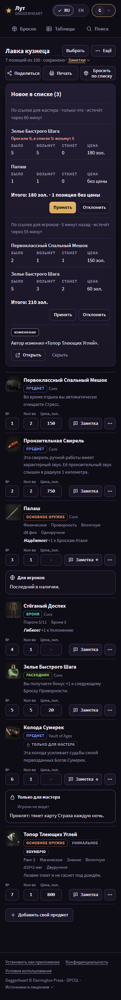
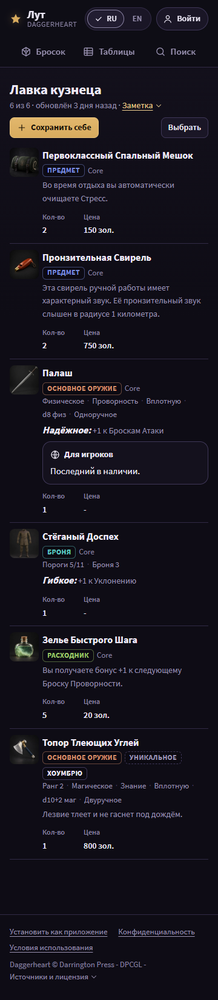

Batch 9 - account list page and shared list page
This page shows the batch 9 mock (the account list page /lists/<uuid> and the shared list page /s/<token>) for the owner to confirm before the implementer starts. Round 3 applies the owner's answers, the first-screen rule (plan.md section 14) and plan review plan-1-3.
Open a state at state.html?s=<state>&lang=en. Renders: <state>__<width>__<lang>.png, 120 PNGs at 360 and 1180 px (and 768 for the rows that A1 names), RU and EN. Shared code in ../direction/ is read-only; u.js, u.css and the copies base.css, r.css are this unit's.
Owner answers


First screen
The top of the primary content below the top of the header, at scroll 0, at 360x640 and 1180x720 (../measure.mjs's method; this unit's copy also measures the extra states). Design target 240 / 270 px; the assert stays at 40%: 256 / 288 px (plan.md section 14, plan review plan-1-3 R2). Green: at the target; gold: inside the limit, past the target; red: past the limit.
| State | Primary content (EN / RU) | Controls above it (RU / EN) | 360 RU | 360 EN | 1180 RU | 1180 EN | Verdict |
|---|---|---|---|---|---|---|---|
list | first list entry / «первая позиция» | the name input, «Ещё» / "More", «Заметки ▾» / "Notes ▾", «Поделиться» / "Share", «Печать» / "Print", «Бросить по списку» / "Roll on this list" | 248 | 248 | 159 | 159 | limit only |
list-prices | first list entry / «первая позиция» | as list | 248 | 248 | 159 | 159 | limit only |
list-longname | first list entry, 200-character name / «первая позиция, имя 200 знаков» | as list, a 200-character name | 248 | 248 | 159 | 159 | limit only |
list-requests | requests panel head / «заголовок панели «Новое в списке»» | as list | 247 | 247 | 85 | 85 | limit only |
shared-player | first list entry / «первая позиция» | «Заметка ▾» / "Note ▾", «Сохранить себе» / "Save to my lists", «Выбрать» / "Select" | 233 | 233 | 206 | 206 | target |
shared-gm | first list entry / «первая позиция» | as shared-player, «Заметка мастера ▾» / "GM's note ▾" | 254 | 233 | 206 | 206 | limit only |
shared-longname | first list entry, 200-character name / «первая позиция, имя 200 знаков» | as shared-player, a 200-character name | 233 | 233 | 234 | 234 | target |
Changes in round 5 (mock 3's list head pattern)
- Mock 3's final list head pattern on /lists/<uuid>: no search row below eight entries, so «Выбрать» sits on the title row before «Ещё» at 360 and ends its own row over the entries at 1180; no icon (M3-2, M3-3).
- On /s/ «Выбрать» ends the action row; with eight entries or more the search row is «Поиск», «Фильтры» and «Выбрать» last.
- One selection bar, sticky at the bottom of the list, «Снять выделение» last on its row; on /s/ «Сообщить владельцу» takes its own line under it (FEATURES "Purchase requests: the send"), not gold (M3-5).
Changes in round 4 (reviews/mocks-1.md)
- Review mocks-1 (round 4): on /lists/<uuid> «Печать» stays on the action row at 360, and the rename is the h1 input (M9-1, rules 15 and 16).
- At 360 the list notes open from «Заметки ▾» on the meta line, and «Цены» (book units or coins, with an example) is in «Ещё»: both are reached without scrolling past the entries (M9-2).
list-requestsis measured (its primary content is the panel head); «Принять» is gold on the first request only; the heading is the spec's «Новое в списке (3)» (M9-3, M9-5).- On /s/ the primary reads «Сохранить себе» / "Save to my lists" (M4-2); in the selection bar «Сообщить владельцу» comes last, on its own line at 600 px or less, and is not gold (M3-5, FEATURES "Purchase requests: the send"); the bar keeps «Снять выделение» (M9-4).
- «Добавить свой предмет» replaces the rule 8 departure «Свой предмет» (A41): batch 9 names it in FEATURES "Lists" (M9-5).
Changes in round 3
- At 360 the side column becomes a head: the name, «Ещё», the meta line and the action row (round 4 replaces the rest of this line: see above).
- The shared page: the count and «Заметка ▾» on the lead line («Заметка мастера ▾» beside it on the GM link), one action row («Сохранить себе», «Выбрать»; «Печать» joins it at 1180). «Список мастера» leaves the lead line.
- Long names (R2): the title takes one line with an ellipsis at 360 and up to three at 1180 (
list-longname,shared-longname). - States removed: the question options; added:
list-longname,shared-longname,shared-note,shared-gm-note.
Differences from plan.md and from R
- The position field and the drag grip stay (R dropped both): the position field is the non-drag reorder control (WCAG 2.5.7) and the only one on a touch screen.
list-drag: the drop mark is one horizontal gold rule on both rows beside the gap (FEATURES.md, "Lists"), not a side stripe.- Between 761 and 1000 px the side column moves on top (A1, P0).
listandlist-priceshave a 768 px render. - At 360 on
/s/«Печать» for the whole list is in the selection bar («Выбрать», «Все», «Печать»): the action row holds two controls. One more step; it needs the owner's yes. - At 360 a long list name is cut to one line: two lines measured 260-282 px on
/s/, past the limit. The full name is in the page title and, for the owner, in «Переименовать». - A ticked row is neutral (lit ground and a check); FEATURES.md "Lists" says "A ticked row takes the gold selected style": batch 9 changes that line (theme 1).
- On
/s/the filters draw only the groups that narrow this list (A20); the threshold (from the eighth entry) stays.
Shared patterns and their owners
- The empty-state pattern is batch 3 (
mocks/3/), the error-page pattern batch 4 (mocks/4/), the toast, the header and the account control batch 2 (mocks/2/), the type, the chips and the pressed default batch 1 (mocks/1/), all unit A. The list-page head pattern (the picker title, the search with «Фильтры», «Выбрать» in «Ещё» at 360 and in the search row at 1180) is the catalog's (mocks/3/). A state that uses one is re-rendered after its owner mock is confirmed. - Ground: the linear page ground
linear-gradient(180deg, var(--bg2) 0, var(--bg) 520px)(owner, 2026-10-29). The no-picture well is the kind glyph; the "?" pedestal is gone (owner, 2026-10-29).
Impeccable critique
- P2: at 360 the GM link's lead line takes two lines in RU (two note links): its first entry starts at 254, inside the limit, past the target.
- P2: at 360 a row has one line of labelled controls under its text (position, quantity, price, «Заметка», «Ещё»), each 34 px or more.
- P2, gold budget: gold on «Сохранить себе», the first «Принять», «Бросить d7», «Проставить эту цену», the drop mark, the note links and the lit account control.
- Detector (
impeccable detect, this folder): 0 slop warnings; 4design-system-fontwarnings (Source Sans 3, batch 1) and advisories from R's copied CSS.
States

The list. 1180: controls in the side column («Поделиться», «Печать», «Бросить по списку», «Ещё»), «Цены:» with an example and both list notes there, «Выбрать» over the rows. 360: the side column becomes a head - the name as the h1 input (rules 15, 16) with «Ещё» («Выбрать», «Цены» as two choices with an example, copy, JSON, delete), the meta line with «Заметки ▾», then «Поделиться», «Печать» and «Бросить по списку». Rows: the position field and the grip, labelled quantity and price, «Заметка» and «Ещё». At 768 the side column moves on top (A1, P0).



«Новое в списке (3)»: two requests with was / taken / becomes per entry and a short stock in words, one notice that an author changed an item; «Принять» is gold on the first request only (one primary per panel). Its primary content is the panel head.



The players' link: the count and «Заметка ▾» on the lead line, one action row with «Сохранить себе» as the one primary and «Выбрать» («Печать» joins it at 1180; at 360 it is in the selection bar), labelled quantity and price, no checkboxes until «Выбрать».